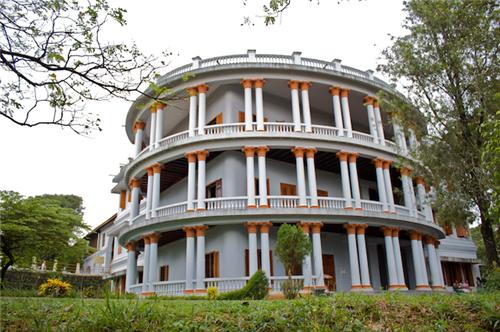
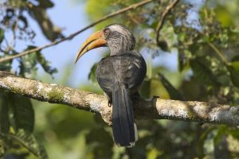

Ernakulam
Ernakulam is part of Kochi referred to in the history of Kerala as the Queen of Arabian Sea. The densely populated Ernakulam District embodies the achievements of the Kerala State in literacy, industry, trade, and commerce. With an inclusive culture, relatively high per capita income and an unstoppable interest of the people in updating themselves of the political, economic, social and cultural happenings in the national and international spheres, Ernakulamrepresents the high modern phase of the Kerala society.
Places of Interest
1.Hill Palace

Hill Palace is a prominent Heritage museum, which exhibits countless archaeological relics and belongings of the Maharaja of Kochi. This famous palace, which was built in 1865, comprises forty-nine buildings with enchanting gardens and a children’s park. It is opened to the public from 9 AM to 12 noon and from 2 PM to 4: 30 PM. Of all the majestic Ernakulam tourist places, Hill Palace is certainly one of the top attractions. Location: Hill Palace Rd, Irumpanam, Thrippunithura, Ernakulam, Kerala 682301.
2.Thattekkad Bird Sanctuary

One of the first bird sanctuaries in Kerala and undeniably a haven for nature enthusiasts. In the words of Salim Ali (world famous ornithologist), Thattekkad is the “richest bird sanctuary in India” since it is home to hundreds of different endangered species of migratory birds. This thick deciduous forest has plantations of mahogany, teak, rosewood and rubber running through it. Make sure to bring along a pair of binoculars to get a glimpse of the birdlife. The best time to visit would be between November and March. Best Time To Visit: Throughout the year Ideal Duration: 1 Day Location: Kothamangalam-Pooyamkutty Road, Nyayapally PO, Thattekad, Kerala 686681
3.Fort Kochi

his seaside town in the south-western part of main Kochi is popular for its old-world colonial charm, and still showcases every single cultural change it has gone through over the centuries. One can spot remnants of Portuguese and Dutch colonialism in this quaint city which is dotted with similar structures and has an overall ambience that brings to light the colonial powers that once ruled over the place. The fort region of Kochi has witnessed the rise and fall of great powers including the Portuguese, Chinese and the Dutch, before it came under the nation-wide British rule in the 18th century. Fort Kochi is lined with old European structures, churches and other architectural buildings which transport you back to a different era. Unlike most other forts in Indian history, Fort Kochi is not about historical fortifications, canons and ruins of old palatial buildings. Instead, it houses the vibe of an ancient colonial city with its cobbled streets, colourful and charming buildings and a picturesque view of the beach, and is one of the best places to see in Ernakulam.
4.Bhoothathankettu

scenic dam site with boating facilities is situated in a vast virgin forest. It is a popular picnic sport with Salim Ali Bird Sanctuary near by.